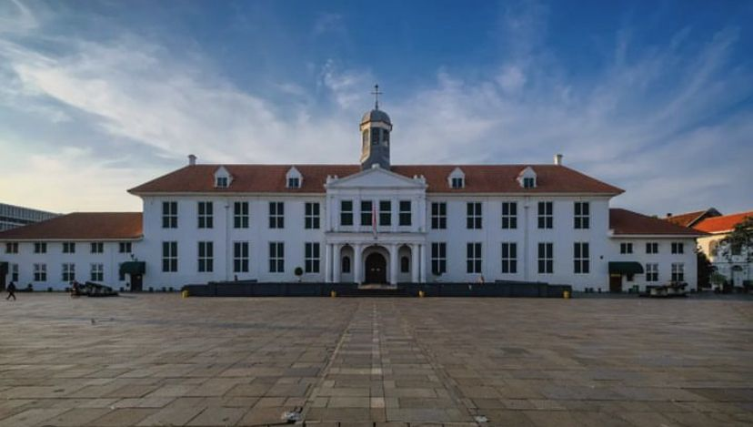
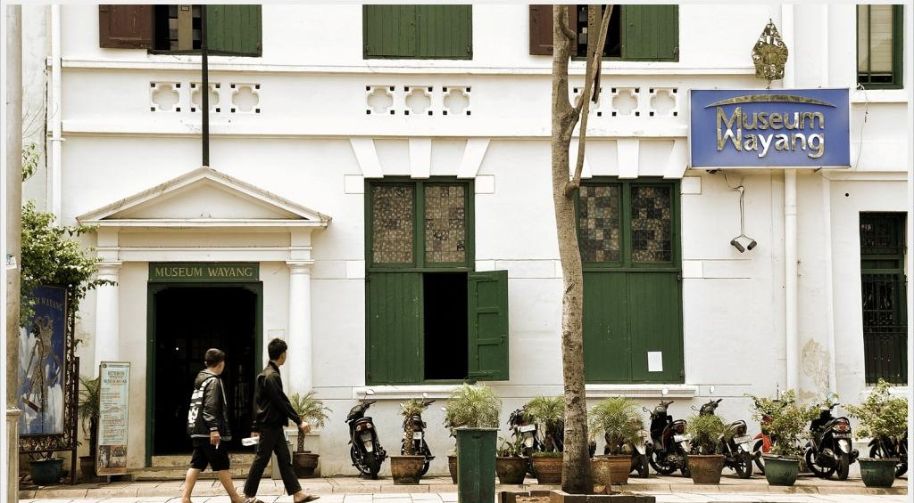
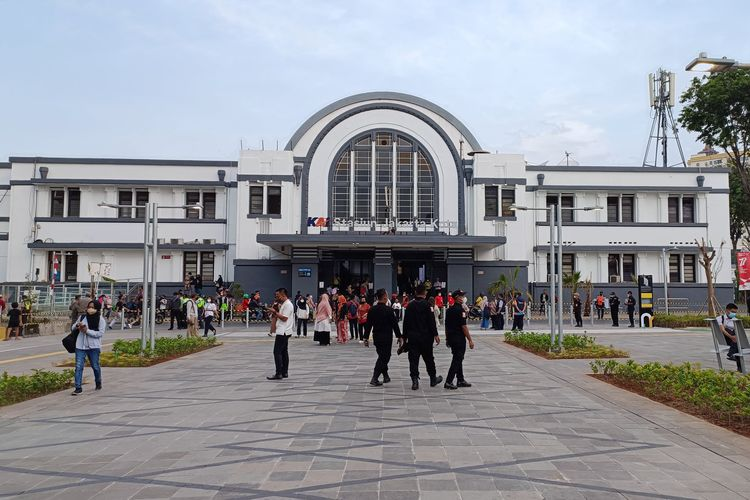
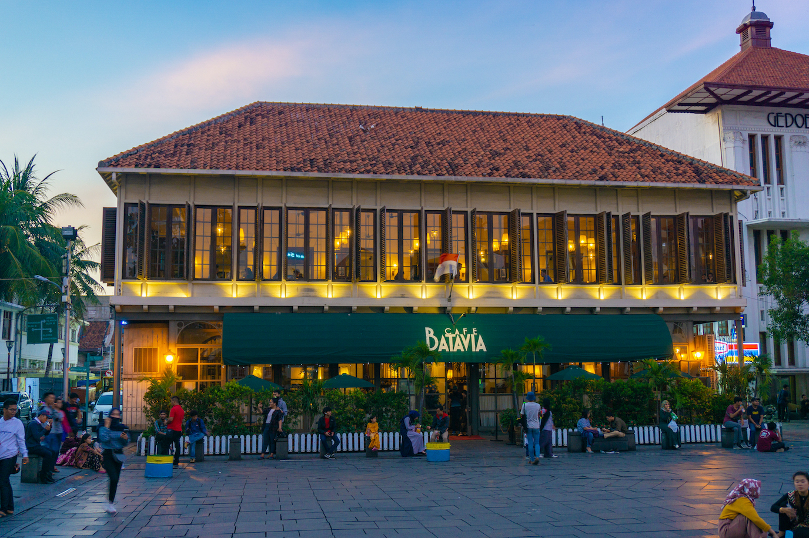
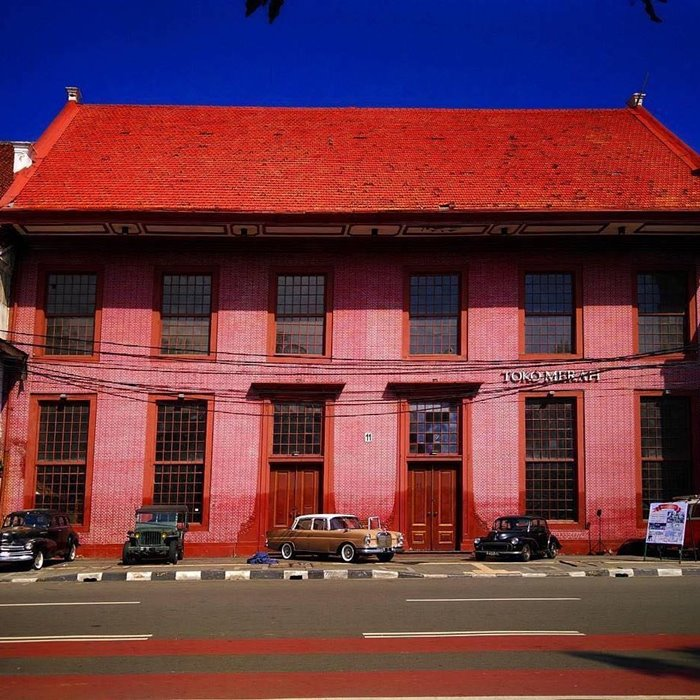

Penjelajahan Sejarah di Kota Tua Jakarta
Oleh : Wulan Nur Aprilia
11210251000051 / 5A / Ilmu Perpustakaan

Kota Tua Jakarta, sering disebut Batavia Lama
pada masa kolonial Belanda, adalah sebuah kawasan di Jakarta yang memiliki sejumlah bangunan bersejarah. Kawasan ini dulu merupakan pusat pemerintahan dan perdagangan selama era kolonial Belanda di Indonesia. Meskipun banyak bangunan yang sudah tua dan beberapa di antaranya terbengkalai, upaya telah dilakukan untuk melestarikan dan merevitalisasi area ini untuk pariwisata dan edukasi.
Beberapa tempat bersejarah yang bisa dikunjungi di Kota Tua Jakarta
1. Museum Fatahillah

Terletak di jantung Kota Tua, museum ini dulunya adalah balai kota Batavia. Di sini, pengunjung dapat melihat berbagai koleksi artefak yang berkaitan dengan sejarah Jakarta.
2. Museum Wayang

Museum ini menyimpan berbagai koleksi wayang dari seluruh Indonesia. Wayang adalah bentuk seni tradisional yang menggunakan boneka untuk menceritakan kisah-kisah epik.
Informasi mengenai Museum Wayang dapat dilihat disini
3. Stasiun Beos (Stasiun Jakarta Kota)

Stasiun kereta api bersejarah dengan arsitektur khas era kolonial.
4. Cafe Batavia

Bangunan yang menjadi cafe ini adalah salah satu struktur tertua di Jakarta dan menawarkan suasana yang mengingatkan pada era kolonial dengan interior vintage.
Informasi mengenai Cafe Batavia dapat dilihat disini
5. Toko Merah

Bangunan berwarna merah yang pernah menjadi kediaman Gubernur Jenderal VOC. Toko Merah saat ini sering digunakan sebagai tempat acara dan pameran.